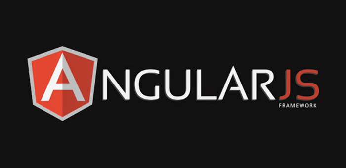

O Angular é um framework de desenvolvimento de aplicativos web em JavaScript e TypeScript. Ele é mantido pelo Google e é amplamente utilizado para construir aplicativos web escaláveis e de alta performance
Forma de utilização do Angular:
1- Instalação: O Angular pode ser instalado através do npm (Node Package Manager) usando o comando npm install -g @angular/cli.
2- Criação de componentes: O Angular utiliza componentes como blocos de construção fundamentais para a criação de interfaces de usuário. Os componentes são criados usando o Angular CLI (Command Line Interface) através do comando ng generate component nome-do-componente.
3- Binding de dados: O Angular oferece recursos poderosos de binding de dados, permitindo que os dados sejam exibidos e atualizados dinamicamente na interface do usuário.
4- Roteamento: O Angular possui um sistema de roteamento que permite a criação de rotas e a navegação entre diferentes páginas ou componentes dentro de um aplicativo.
5- Injeção de dependência: O Angular possui um mecanismo de injeção de dependência embutido, permitindo a criação e compartilhamento de serviços entre os componentes.
Vantagens do Angular:
1- Estrutura robusta: O Angular oferece uma estrutura completa para o desenvolvimento de aplicativos, incluindo recursos como roteamento, gerenciamento de estado e testes.
2- TypeScript: O Angular é baseado em TypeScript, uma linguagem que adiciona recursos avançados ao JavaScript, como tipagem estática e suporte a POO (Programação Orientada a Objetos).
3- Produtividade: O Angular possui ferramentas como o Angular CLI, que facilita a criação e manutenção de projetos, além de um conjunto abrangente de bibliotecas e componentes prontos para uso.
4- Suporte da comunidade: O Angular possui uma comunidade ativa e uma ampla variedade de recursos, tutoriais e documentação disponíveis, o que facilita a aprendizagem e resolução de problemas.
Desvantagens do Angular:
1- Curva de aprendizado inicial: Assim como o React, o Angular também possui uma curva de aprendizado inicial, especialmente para desenvolvedores que não estão familiarizados com conceitos como injeção de dependência e componentização.
2- Complexidade: O Angular é um framework abrangente e possui uma estrutura mais complexa em comparação com bibliotecas mais leves, o que pode aumentar a complexidade do código e a curva de aprendizado para desenvolvedores iniciantes.
É importante lembrar que as vantagens e desvantagens do Angular podem variar dependendo do contexto do projeto e das necessidades específicas de desenvolvimento.